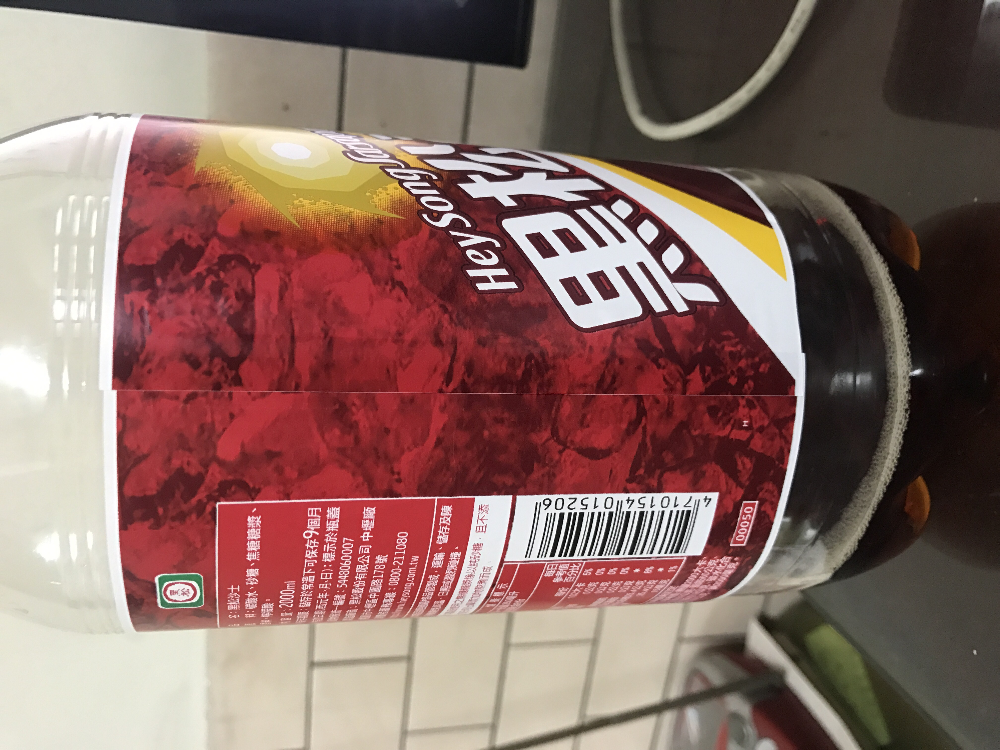

她，是一個我喜歡的女生。她喜歡各式各樣的紙鶴。
為何我知道呢？因為他每天的早自修時都會為自己摺一隻紙鶴當這一天的開始，
我很想接近她，但是因為不同班，所以也只能隔著窗外看她，而沒有辦法接近她，
也不知道是不是因為她，所以我也養成了在早自習摺紙鶴的習慣。
同學都問:「你很奇怪喔？平常看你不像會摺紙鶴的感覺，怎麼忽然想摺啊？」
「沒阿，忽然覺得摺這東西也蠻有趣的，就去學了啊!」
『呵～總不能說是因為她吧，她是我心中最重要的秘密!』
這樣的情形好像也沒辦法拉近我跟她的距離，天天摺紙鶴，反而讓我更想她。
忽然想到，既然她紙鶴都放在桌上，那我就拿我的跟她換好了。
這是一個很大膽的想法，因為我跟她並不同班，而我又要哪時去交換呢？
這就有技術上的問題，要趁升旗的時候嗎？感覺那時還不錯，只要她班沒人那就可以。
(撲通撲通～)我的心跳也太大聲了吧，做壞事時果然會很緊張，
趁大家都已經排隊離開教室時我才自己又偷偷的跑到他們教室，
看樣子她班上的值日生也不在，
趁現在快點把我今天早上摺好的紙鶴跟她桌上的那一隻交換，之後趕快跑去升旗，
不然被點到名那就糟了。升旗回來時，偷偷跟在她後面，
想看看她一看到我跟她換的紙鶴的表情，希望不要糟，因為我摺的不太好。
當她一回到座位上時，身體震了一下，她應該是發現了我跟她交換那那隻紙鶴吧，
但是我看不到她的表情，因為她的側臉被她如絲般的長髮給擋住了。
那我還是先走好了，畢竟在人家班級前面望東望西的實在太奇怪了。
第二節，第三節…到第七節，我的紙鶴都還在她的桌上。
呼!看樣子她應該不會覺得太糟吧，因為它沒被丟掉，那我就繼續每天都跟她交換好了。
不過她摺的紙鶴真的很漂亮，上面也有她身上的一股淡淡的香氣，話說在前頭，
我並不是變態，只是有時走過自己喜歡的女孩子身旁，
總是會特別注意她身上所發出的香氣，而且那種香氣總是會讓你印象非常的深刻。
就這樣，我天天都跟她交換，而她也沒有厭惡的感覺，而我也越來越大膽，
開始在我摺的紙鶴下面掛上一張小卡，上面寫寫我每天一早起床的心情，
一次兩次之後，她也開始在她的紙鶴上也加上小卡，寫上她的心情。
這樣的感覺我們想是無話不談的好朋友，
而我每天也因為她所寫出的心情而在心裡有了漣漪。
特別是當她寫到：「每天早上，一隻紙鶴為我帶來了一份心情，
而我的心情也由我手中傳出去，但是那份心情是從哪來？我的心情又是往哪裡去？」
仔細再想想，紙鶴是我們兩個溝通的橋樑，但它也限制住了我們兩感情上的發展，
我是不是應該給她知道我呢？那假如我不是她喜歡的那一型又怎麼辦呢？
這樣的心情在我心中煎熬了幾天，我還是決定讓她知道我是誰，
反正事情總要有個結束，所以我決定要在今天的小卡上面約她放學之後在操場見面，
這樣假如她不喜歡我場面也不會那麼尷尬。但是…今天她沒來，問她同學，
他們說她請假了。第二天她還是沒來，第三第四…都沒看到她。忍不住再去問一次，
原來她住院了，他同學們也不知道她生了什麼病，只知道情形好像不樂觀。
所以我決定要直接去找她，不管如何，她已經在我心裡烙下了一個痕跡。
進到醫院，那種嚴重的消毒水的味道又讓我感到渾身不舒服，
也勾起我久久不想面對的回憶。父親去世的臉我永遠不會忘記，
那是一張讓我感覺他有很多話都還沒跟我說，而我又沒機會見到他最後一面，
那一直都是我這一生最遺憾的事情，所以那張臉我也一直封鎖在我記憶的最深處，
而這時卻被勾起，我有一種很不祥的預感，所以很快的到櫃檯，找尋她的病房。
在通往病房的走道上，內心五味雜陳，走到病房前，更是猶豫，
我到底該不該推開這扇門，心跳也越來越大聲，忽然一股衝動，
我把門推開了，而裡面並沒有其他家屬，只有一個女孩躺在床上，
那就是讓我每天思念的她，而在她床的四周，掛滿了紙鶴，紙鶴下面都有掛小卡，
我知道那是寫給我的，所以我悄悄地走近，慢慢的一張張拿起來看，
當我看的入神時，忽然聽到有人叫我的名字，我一抬起頭，
發現她用她那像鹿一般無辜的大眼睛看著我。
「原來每天跟我交換紙鶴的人是你。」
「嗯！是我，不過你怎麼會知道我的名字？」
「嗯…」
她把頭低下來，她那過肩的長髮把她的臉蛋擋住了，不過我可以感覺到她在臉紅。
「因為…我之前看到你就有一種特別的感覺，所以我就問了你班上的人你的名字。」
她越說越小聲。
「喔!原來是這樣…」
此時我心裡超開心的，但是卻說不出話來。
「杏寒…」
我叫了她一聲
「嗯？」
之後我就在安靜地病房中聽到我們兩的心跳聲。
因為在她抬起頭的一瞬間，我就吻了上去。